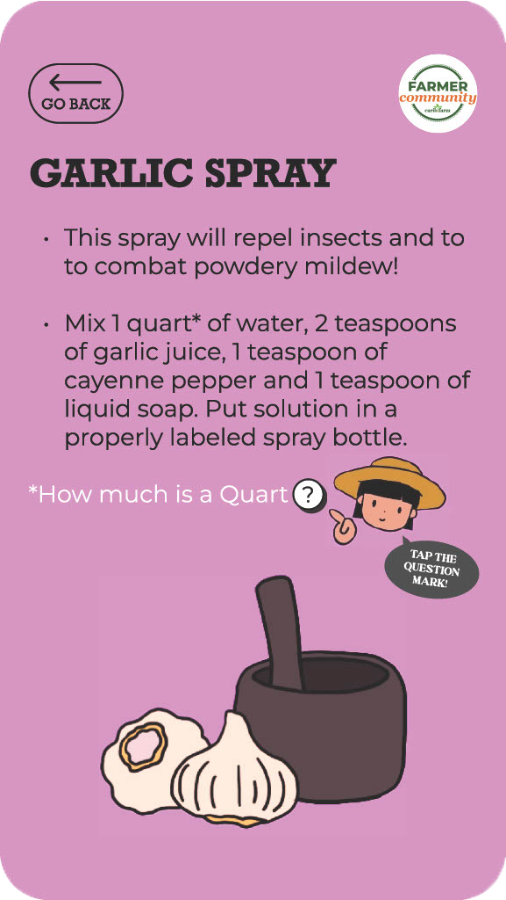
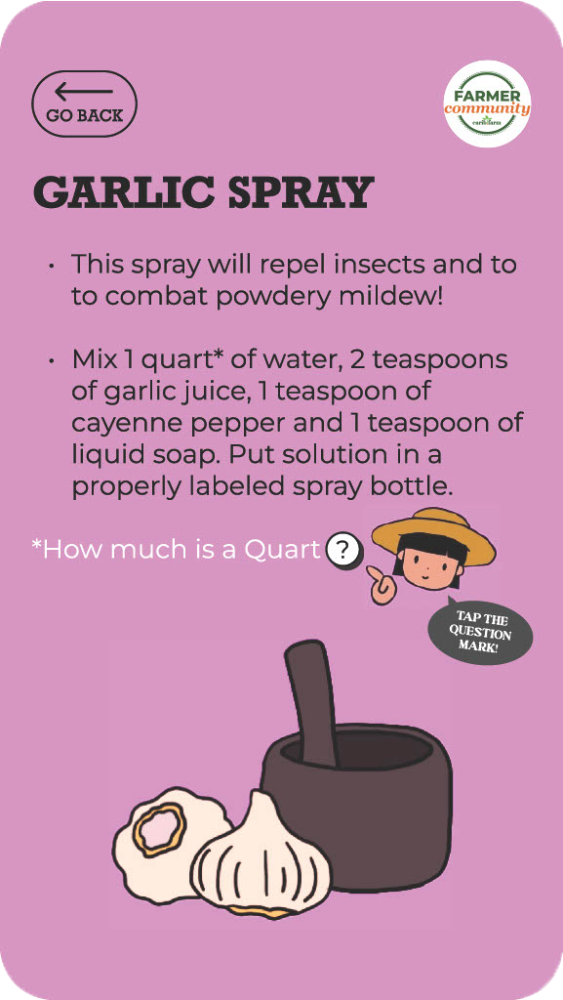

2024
FarmerCommunity is an app created by Carib Farm Inc. that aims to connect farmers across the Caribbean Islands
to share diverse farming knowledge, and improve the qualities of food security to
build a strong community.
This project consists of application pages suited for users to learn about different
farming techniques that are sustainable, reusable, and easy-to-make at home. With
the target audience ranging from 40 to 60 years old, the product is designed to be
both readable and legible for any sort of users to effortlessly understand. Every
asset was illustrated by hand and pieced together using Figma to effectively wireframe
and communicate with team members.

 
